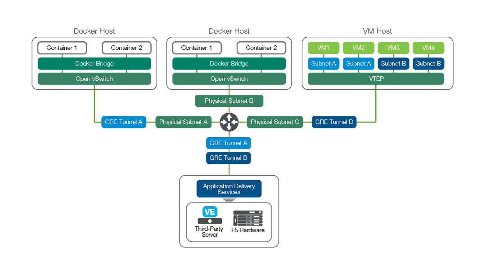
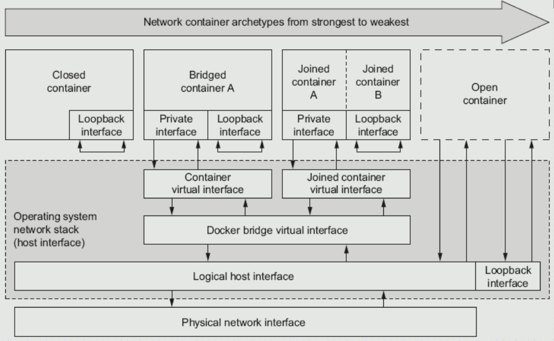
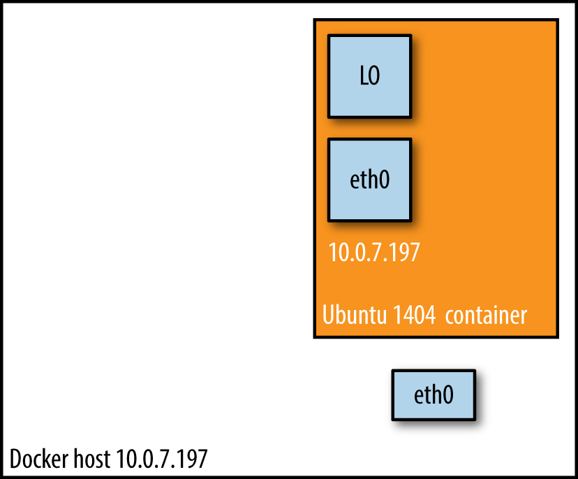
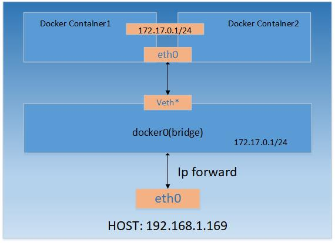
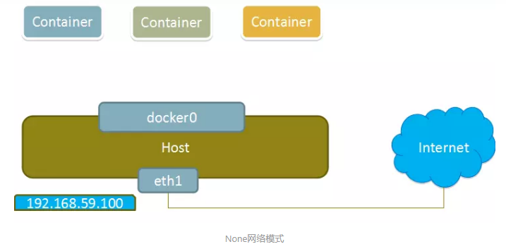

纸上得来终觉浅，绝知此事要躬行。
当你开始大规模使用 Docker 时，你会发现需要了解很多关于网络的知识。无论你是在单主机上进行部署，还是在集群上部署，你总得和网络打交道。Docker 网络有四种模式：网桥模式，主机模式，容器模式和无网络模式。

1. 网络模式
Docker 默认提供了四种网络模式，供容器启动的时候选择，分别是 bridge、none、container 和 host，下面是它们可能的使用场景。在默认情况下，Docker 会在主机上新创建一个 docker0 的网桥，其作用就相当于一个虚拟的交换机，所有的容器都是连到这台交换机上面的。Docker 会从私有网络中选择一段地址来管理容器，比如 172.17.0.1/16，这个地址根据你之前的网络情况而有所不同。
# 查看现有的网络模式
$ docker network ls
NETWORK ID NAME DRIVER SCOPE
2bd191119c33 bridge bridge local
1e714111937b host host local
2e4d5111c51e none null local
# 查看本机Docker网段
$ docker inspect bridge -f "{{json .IPAM.Config}}"
[{"Subnet":"172.17.0.0/16","Gateway":"172.17.0.1"}]
- [1] 网桥模式(
bridge)
该模式是 Docker 默认的网络模式，此模式会为每一个容器分配 Network Namespace 、设置 IP 等，并将一个主机上的 Docker 容器连接到一个虚拟网桥上。Docker 在安装时会创建一个名为 docker0 的网桥(bridge)，创建的容器都会默认挂到 docker0 上面。
# 指定使用的网络模式
$ docker run -it --rm busybox
$ docker run -it --rm --network=bridge busybox
# 使用brctl可以查看docker0上面有哪些容器
$ brctl show
bridge name bridge id STP enabled interfaces
docker0 8000.0242de1d30e9 no veth40db10a
veth5998947
veth220960a# 如果想做隔离，可以使用下面命令来创建一下bridge
$ docker network create -d bridge net_bridge
fb0a51e7e720f0......1c33293c58815e31
# 自定自己创建的bridge网络
$ docker run -it --rm --network=net_bridge busybox
- [2] 主机模式(
none)
在这种模式下，Docker 容器拥有自己的 Network Namespace，但是，并不为 Docker 容器进行任何网络配置。也就是说，这个 Docker 容器没有网卡、IP、路由等信息。这种网络模式下容器只有 lo 回环网络，没有其他网卡，所以没有办法联网，封闭的网络能很好的保证容器的安全性。
# 指定使用的网络模式
$ docker run -it --rm --network=none busybox
- [3] 容器模式(
container)
这个模式指定新创建的容器和已经存在的一个容器共享一个Network Namespace，而不是和宿主机共享。新创建的容器不会创建自己的网卡，配置自己的 IP，而是和一个指定的容器共享 IP、端口范围等。同样，两个容器除了网络方面，其他的如文件系统、进程列表等还是隔离的。两个容器的进程可以通过 lo 网卡设备通信。
# 启动依赖的容器
$ docker run -d --name=net_container_1 busybox
# 指定使用的网络模式
$ docker run -it --network=container:net_container_1 busybox
- [4] 无网络模式(
host)
众所周知，Docker 使用了 Linux 的 Namespaces 技术来进行资源隔离。比如 PID Namespace 用来隔离进程，Mount Namespace 用来隔离文件系统，Network Namespace 用来隔离网络等。一个 Network Namespace 提供了一份独立的网络环境，包括网卡、路由、Iptable 规则等都与其他的 Network Namespace 隔离。
一个 Docker 容器一般会分配一个独立的 Network Namespace。但如果启动容器的时候使用 host 模式，那么这个容器将不会获得一个独立的 Network Namespace，而是和宿主机共用一个 Network Namespace。容器将不会虚拟出自己的网卡，配置自己的 IP 等，而是使用宿主机的 IP 和端口。
使用 host 模式的容器可以直接使用 host 的 IP 地址与外界通信，容器内部的服务端口也可以使用宿主机的端口，不需要进行 NAT。host 网络模式最大的优势就是网络性能比较好，但是 host 上已经使用的端口就不能再用了，网络的隔离性不好。
# 指定使用的网络模式
$ docker run -it --rm --network=host busybox
2. 外部访问
了解外部主机访问容器内应用程序的基本方式和方法
我们在容器中运行了一些网络应用程序的时候，如果需要让外部网络能够访问到该应用就需要对端口进行映射了。通常，我们都是通过如下三种方式进行设置的。Mac 系统的随机映射端口是 32768~32900，Linux 类操作系统的随机映射端口是 49000~49900。
- 通过
-p将容器的指定端口映射到宿主机的指定端口上 - 通过
-P将容器的指定端口映射到宿主机的随机端口上
# -p参数可指定多个
# 1.映射所有网络地址
$ docker run -d -p 5000:5000 --name=myapp sonatype/nexus3
# 2.映射到指定地址的指定端口
$ docker run -d -p 127.0.0.1:5000:5000 --name=myapp sonatype/nexus3
# 3.映射到指定地址的任意端口
$ docker run -d -p 127.0.0.1::5000 --name=myapp sonatype/nexus3
$ docker run -d -p 127.0.0.1:5000:5000/udp --name=myapp sonatype/nexus3# —P参数不能多个
$ docker run -d -P training/webapp python app.py# 查看映射端口配置
$ docker port myapp
8081/tcp -> 127.0.0.1:32769
$ docker port myapp 8081
127.0.0.1:32769
# 查看容器输出日志
$ docker logs -f myapp3. 容器互联
了解容器之前互信互通的方式和方法
当然，还存在同一宿主机上容器之间应用程序的相互通信问题，为了解决这个问题，我们就需要让容器之间进行互通，俗称容器互联。通常，我们都是通过如下两种方式进行设置的。但随着 Docker 网络的完善，强烈建议大家将容器加入自定义的 Docker 网络来连接多个容器，而不是使用 --link参数。
- 使用
--link来连接其他容器- 该参数是通过修改环境变量和
/etc/hosts文件实现的
- 该参数是通过修改环境变量和
- 使用
network create来创建新的网络- 创建独立的网络，将容器都运行在该网络中就可相互访问
- 使用
docker compose来多个容器互相连接- 高级用法，后续补充哈
# 参数格式: --link name:alias
# name: 需要连接的容器名称
# alias: 设置这个连接的别名
$ docker run -d -P --name myapp --link db:db sonatype/nexus3
# 查看环境变量env输出
$ docker run -d -P --name myapp --link db:db sonatype/nexus3 env
. . .
DB_NAME=/web2/db
DB_PORT=tcp://172.17.0.5:5432
DB_PORT_5000_TCP=tcp://172.17.0.5:5432
DB_PORT_5000_TCP_PROTO=tcp
DB_PORT_5000_TCP_PORT=5432
DB_PORT_5000_TCP_ADDR=172.17.0.5
# 在容器中查看IP地址映射信息
$ docker exec -it myapp "cat /etc/hosts"
172.17.0.7 aed84ee21bde
172.17.0.5 db
......# 创建新子网络
$ docker network create -d bridge --subnet=172.30.0.0/16 my_network
# 连接指定网络
$ docker run -d --name=myredis \
--network=my_network \
--ip=172.30.0.10 \
-v /Users/escape/redis:/data \
redis redis-server --requirepass 123456
$ docker run -d --name=mypg \
--network=my_network \
--ip=172.30.0.11 \
-v /Users/escape/pg_data:/var/lib/postgresql/data \
-e POSTGRES_DB=draft \
postgres:104. 设置 DNS
掌握 DNS 的设置方式和方法
如何自定义配置容器的主机名和 DNS 呢？秘诀就是 Docker 利用虚拟文件来挂载容器的 3 个相关配置文件。这种机制可以让宿主主机 DNS 信息发生更新后，所有 Docker 容器的 DNS 配置通过 /etc/resolv.conf 文件立刻得到更新。
# 在容器中使用mount命令可以看到挂载信息
/dev/sda1 on /etc/resolv.conf type ext4 (rw,relatime,data=ordered)
/dev/sda1 on /etc/hostname type ext4 (rw,relatime,data=ordered)
/dev/sda1 on /etc/hosts type ext4 (rw,relatime,data=ordered)
......配置全部容器的 DNS ，也可以在 /etc/docker/daemon.json 文件中增加以下内容来设置。对应 MacOS 而已，需要在客户端内进行 DNS 的配置并重启，即可。
{
"dns" : [
"114.114.114.114",
"8.8.8.8"
]
}如果只是针对于不同的容器使用不同的配置，则可以在启动时 docker run 时候通过参数的指定来达到同样的效果。
--hostname=HOSTNAME- 设定容器的主机名
- 会写入容器内的
/etc/hostname和/etc/hosts中
--dns=IP_ADDRESS- 添加 DNS 服务器
- 会写入容器内的
/etc/resolv.conf中
# 举个栗子
$ docker run -d -p 5000:5000 --name=myapp \
--hostname=my_app_web \
--dns=8.8.8.8 \
sonatype/nexus35. 高级设置
了解网络配置的实现原理以及 iptable 规则的指定
- [1] 基础实现原理
当 Docker 启动时，会自动在主机上创建一个 docker0 虚拟网桥，实际上是 Linux 的一个 bridge，可以理解为一个软件交换机，它会在挂载到它的网口之间进行转发。此后启动的容器内的网口也会自动分配一个同一网段 172.17.0.0/16 的地址。
$ ifconfig
docker0: flags=4099<UP,BROADCAST,MULTICAST> mtu 1500
inet 172.17.42.1 netmask 255.255.0.0 broadcast 172.17.255.255
ether 02:42:f3:87:34:a3 txqueuelen 0 (Ethernet)
RX packets 0 bytes 0 (0.0 B)
RX errors 0 dropped 0 overruns 0 frame 0
TX packets 0 bytes 0 (0.0 B)
TX errors 0 dropped 0 overruns 0 carrier 0 collisions 0当创建一个 Docker 容器的时候，同时会创建了一对 veth pair 接口（当数据包发送到一个接口时，另外一个接口也可以收到相同的数据包）。这对接口一端在容器内，即 eth0；另一端在本地并被挂载到 docker0 网桥，名称以 veth 开头（例如 vethAQI2QT）。通过这种方式，主机可以跟容器通信，容器之间也可以相互通信。Docker 就创建了在主机和所有容器之间一个虚拟共享网络。
需要注意的是，MacOS 操作系统下 docker 的网络处理方式并不一样，并没有上述所说的 docker0 网桥。你可以理解为其实一个假 docker，所以不建议再生产环境中使用。有兴趣的话，可以阅读官方文档加以理解。

- [2] 容器访问控制
容器的访问控制，主要通过 Linux 上的 iptables 防火墙来进行管理和实现。iptables 是 Linux 上默认的防火墙软件，在大部分发行版中都自带。
容器要想访问外部网络，需要本地系统的转发支持。如果在启动 Docker 服务的时候设定 --ip-forward=true, 系统就会自动设定系统的 ip_forward 参数为 1。
# 容器访问外部网络
$ sysctl net.ipv4.ip_forward
# 开启转发机制
$ sysctl -w net.ipv4.ip_forward=1容器之间访问，需要两方面的支持。容器的网络拓扑是否已经互联。默认情况下所有容器都会被连接到 docker0 网桥上。本地系统的防火墙软件，iptables 是否允许通过。
当启动 Docker 服务的时候，默认会添加一条转发策略到本地主机 iptables 的 FORWARD 链上。--icc=true的值决定策略是 ACCEPT 还是 DROP，默认开启。当然，如果手动指定 --iptables=false 则不会添加 iptables 规则。
$ sudo iptables -t forward -nL
Chain FORWARD (policy DROP)
target prot opt source destination
DOCKER-USER all -- 0.0.0.0/0 0.0.0.0/0
DOCKER-ISOLATION-STAGE-1 all -- 0.0.0.0/0 0.0.0.0/0
ACCEPT all -- 0.0.0.0/0 0.0.0.0/0 ctstate RELATED,ESTABLISHED
DOCKER all -- 0.0.0.0/0 0.0.0.0/0
ACCEPT all -- 0.0.0.0/0 0.0.0.0/0
......在启动 Docker 服务时，可以同时使用 -icc=false --iptables=true 参数来关闭允许相互的网络访问，并让 Docker 可以修改系统中的 iptables 规则。使用 --link=CONTAINER_NAME:ALIAS 选项，iptables 会在两个容器之前添加一条 ACCEPT 规则，允许相互访问开放的端口。取决于 Dockerfile 中的 EXPOSE 指令
# 举个栗子
$ docker run -d -p 5000:8081 --name=myapp \
icc=false --iptables=true \
--link=db:app_db \
sonatype/nexus3- [3] 内外容器访问
默认情况下，容器可以主动访问到外部网络的连接，但是外部网络无法访问到容器。容器所有到外部网络的连接，源地址都会被 NAT 成本地系统的 IP 地址。这是使用 iptables 的源地址伪装操作实现的。
下述规则将所有源地址在 172.17.0.0/16 网段，目标地址为其他网段（外部网络）的流量动态伪装为从系统网卡发出。MASQUERADE 跟传统 SNAT 的好处是它能动态从网卡获取地址。
# 查看主机的NAT规则
$ sudo iptables -t nat -nL
Chain POSTROUTING (policy ACCEPT)
target prot opt source destination
MASQUERADE all -- 172.17.0.0/16 !172.17.0.0/16
......外部访问容器实现，不管 -p 或 -P 用那种办法，其实也是在本地的 iptable 的 nat 表中添加相应的规则。规则映射了 0.0.0.0，意味着将接受主机来自所有接口的流量。可以通过 -p 参数，来限制指定地址访问。
$ iptables -t nat -nL
Chain DOCKER (2 references)
target prot opt source destination
DNAT tcp -- 0.0.0.0/0 0.0.0.0/0 tcp dpt:80 to:172.17.0.2:80- [4] 设置默认网桥
Docker 服务默认会创建一个 docker0 网桥，它在内核层连通了其他的物理或虚拟网卡，这就将所有容器和本地主机都放到同一个物理网络。由于目前 Docker 网桥是 Linux 网桥，用户可以使用 brctl show 来查看网桥和端口连接信息。
每次创建一个新容器的时候，Docker 从可用的地址段中选择一个空闲的 IP 地址分配给容器的 eth0 端口。使用本地主机上 docker0 接口的 IP 作为所有容器的默认网关。
$ sudo brctl show
bridge name bridge id STP enabled interfaces
docker0 8000.0242f38734a3 no- [5] 自定义网桥
除了默认的 docker0 网桥，用户也可以指定网桥来连接各个容器。在启动 Docker 服务的时候，使用 -b BRIDGE 或--bridge=BRIDGE 来指定使用的网桥。
# 先停止服务并删除旧的网桥
$ sudo systemctl stop docker
$ sudo ip link set dev docker0 down
$ sudo brctl delbr docker0
# 创建一个网桥docker1
$ sudo brctl addbr docker1
$ sudo ip addr add 192.168.5.1/24 dev docker1
$ sudo ip link set dev docker1 up
# 查看确认网桥创建并启动
$ ip addr show bridge0在 Docker 配置文件 /etc/docker/daemon.json 中添加如下内容，即可将 Docker 默认桥接到创建的网桥上。启动 Docker 服务。新建一个容器，可以看到它已经桥接到了 bridge0 上。
{
"bridge": "bridge0",
}6. 总结一下
通过上面知识理解，相信我们都对应 docker 的网络有了一定深度的理解了。如果我们不考虑防火墙的话，使用还是比较方便，但是要设置防火墙的话就比较费劲了。
幸好，我们这里提供了两个方便我们配置 docker 网络的 github 项目，通过对其的了解和使用，可以方便我们管理和配置复杂的网络设置。
- pipework
- 一个
shell脚本 - 可以帮助用户在比较复杂的场景中完成容器的连接
- 一个
- playground
- 一个
Python库 - 提供完整的容器网络拓扑管理，路由、
NAT防火墙等
- 一个
7. 参考链接
送人玫瑰，手有余香！